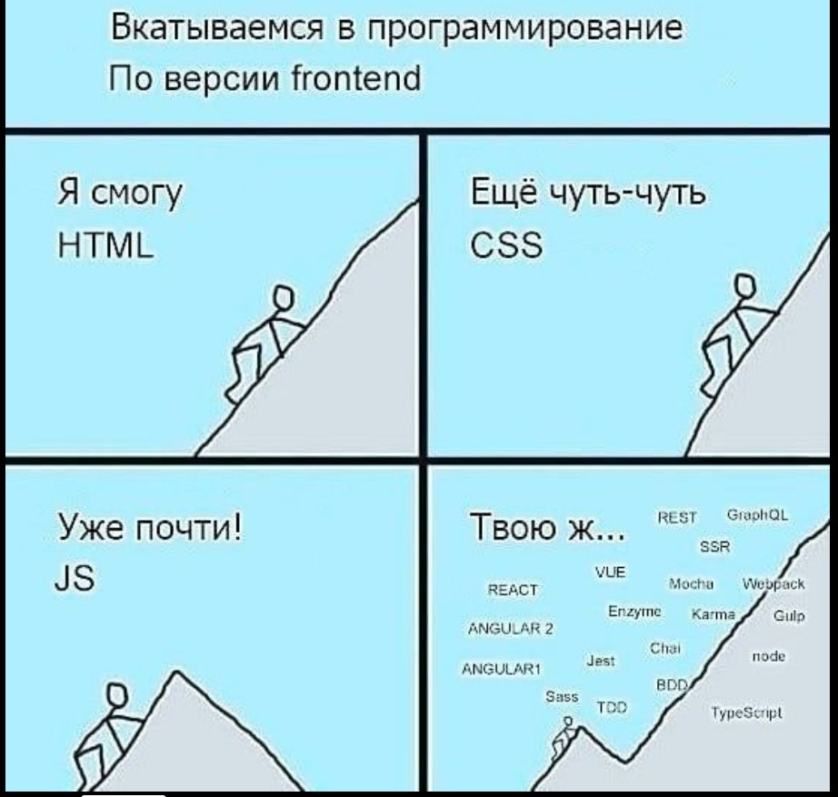

История профессии фронтенд-разработчика)
Примерно каждые полгода очередной фронтенд-разработчик выходит на сцену популярной фронтенд-конференции и рассказывает почему фронтенд умер. После чего обычно происходит реклама нового веб-фреймворка или инструмента, который по взмаху волшебной палочки может решить все проблемы, излечить от всех болезней и вообще сделать жизнь идеальной.
Все это, конечно, порождает вторичную волну создания контента, первые реакции, реакции на реакции и вот это вот все. И все это продолжает пульсировать пока очередной фронтенд-разработчик на очередной популярной фронтенд-конференции не скажет что фронтенд мертв. Как вы заметили история повторяется.
Но говорить про смерть фронтенда я сегодня не хочу. Все наоборот, фронтенд цветет и пахнет. Но, как вы понимаете, это не стабильное состояние и периоды расцвета и упадка цикличны.
Поэтому сегодня я бы хотел рассказать вам фронтендерскую историю для того, чтобы лучше понимать и разобраться самому, в том числе, где мы вообще находимся, как мы сюда попали и чего нам ждать в будущем.
Как в оригинальной рождественской истории к нам должны прийти три призрака: прошлого, настоящего и будущего, а поэтому нам нужен свой Скрудж, который в конце истории поймет – умер ли фронтенд по-настоящему или же это очередной виток истории.
Начнем с того, что фронтенд был мертв
Так вот, сидит, значит, однажды Скрудж, прогает свой пет-проджект. Как вдруг, по коже побежали мурашки, а дыхание стало тяжелым. Нет, это не паническая атака. Скрудж уже знаком с этим ощущением. Из темного угла напротив на Скруджа смотрел до боли узнаваемый логотип синего цвета. Это был Internet Explorer. Дух прошлого.
Дух вышел на свет, посмотрел на Cкруджа и сказал: «Знаешь, я ведь не всегда таким был, я когда-то был лучшим браузером!»
В 80х годах, после открытия доступа к интернету всему миру, один из родоначальников “глобальной паутины” - Тим Бернерс-Ли занимался вопросами инструментов для этой самой паутины. В результате в 1991 году он предложил первый вариант языка HTML.
Это изобретение нельзя было выпускать из виду. И в то время молодая технологичная компания, известная как Netscape Communications, адаптировала эту технологию в своем браузере - Netscape Navigator (далее просто Netscape).
Это было прорывом. Netscape распространялся бесплатно для личного использования и была платная лиценция для коммерческого.
Netscape был широко распространен, но как говорится, где есть деньги там появляется Microsoft. В этом же году появляется первая версия IE, которая, конечно же, была жалкой пародией на Netscape. Но данный год принято считать началом первой браузерной войны.
Что имеется в виду?
В погоне за аудиторией Netscape и IE безконтрольно добавляли новые фичи и теги, которые, конечно, не поддерживались друг другом. Доходило до такого абсурда, что дизайнеры, которые делали сайты для этих браузеров оставляли подсказки "лучше просматривать в netscape" или "Лучше просматривать в IE".
В этих браузерах даже были разные версии предков современного Javascript. В общем, старый добрый мир веб-разработки.
Но все закончилось ближе к 2001 году. Поскольку Netscape была маленькой компанией, а Microsoft к тому времени уже гигант с диверсифицированным бизнесом. IE быстро вытеснил конкурента с рынка, потому что IE был бесплатен и шел в комплекте с windows.
В 2001 году вышел IE6, который был лучшим браузером на рынке. И до 2006 года IE остановился в развитии. При отсутствии конкурентов за это время вышло только одно обновление. За аналогичный период до, как вы можете догадаться, вышло 6 версий.

Скрудж дослушал эту историю и вопрсосительно посмотрел на дух IE: «Зачем ты мне это рассказал?»
Дух продолжил.
Представь как работает большой адронный коллайдер. Ученые разгоняют два атома вещества и они на большой скорости врезаются друг в друга. При этом, от столкновения летят искры в разные стороны, но это не искры - это другие элементарные частицы, которые нельзя найти в природе. Которые можно обнаружить только если столкнуть ядро водорода и гелия.
Некоторые частицы после столкновения живут всего долю секунды и их очень трудно обнаружить, другие наоборот улетают за пределеы коллайдера и существуют как ни чем не бывало.
А теперь давайте перенесем эту метафору на войну браузеров. IE и Netscape сталкиваются снова и снова. И после каждого столкновения появляется огромное количество инструментов и технологий, которые мы используем по сей день.
В третьей версии ИЕ появились каскадные стили, без которых сейчас невозможно представить современный веб.
Из-за того, что фичи браузеров были не совместимы друг с другом появились идеи, что такого быть не должно и страницы должны выглядеть одинаково везде. Появилась W3С - организация, занимающаяся стандартизацией для веб технологий.
Интересно, что javascript как раз таки и был выкован в огне этой войны. Сначала как два клона одной концепции, а после создания еще одной организации по стандартизации (ECMA) язык приобрел свою первую спецификацию.
Дух не останавливался.
Конечно, хорошо, когда происходят столь легендарные события, которые остаются в сознании нескольких поколений, но какой толк от них когда страдают обычные разработчики? Именно с приходом этого понимания начался новый этап в вебе. Разработчики захотели вернуть контроль себе!
Были, конечно, очень активные ребята, как например WaSP (Web Standart Project) - которые заполняли почтовые ящики Netscape и Microsoft огромным количеством писем с просьбами стандартизовать фичи, а после получения отказа устраивали публичные бичевания в медиа.
Но были и более сдержанные, как например Джон Резиг, создатель jquery. Он понимал, что различия между браузерами очень заметны и что компании не очень стремяться их сгладить, поэтому разработчикам нужно взять все в свои руки. Так появилась самая популярная библиотека на js в мире, которая предлагала очень удобный API для создания и манипулирования веб-приложениями независимо от браузера, в котором она использовалась.
И если ты думаешь, что эти подвижки были только в экосистеме javascript, то нет. Еще с 2000х годов, многие работали над css-фреймворками, которые работали одинаково во многих браузерах, позволяя дизайнерам размещать контент в грид-системах того времени (960 grid system, yaml4, yui).
Скрудж, не скрывая своего гнева, завопил: «Все, все, я понял. Если хочешь что-то сделать, сделай сам!»
Дух отрицательно покачал головой: «Дослушай.»
Компании не всегда делают дичь, от которой страдают разработчики. Доказательством этому может служить вторая браузерная война. Когда ворвавшись в жизни людей Google Chrome смог на три головы побить ближайших конкурентов, заняв лидирующее место в мире. И уже осколки в виде новых технологий и инструментов отлетали только от самого хрома. Так как остальные браузеры пытались хотя бы догнать хром в функциональности.
Тем не менее, на фоне подьема и сплочения веб-технологий назревало новое столкновение. Бэкендеры начали выходить на сушу и нести свои идеи во фронтенд.
Так началась эпоха MV* фреймворков. Одними из первых были такие, как knokout, backbone, Emberjs и конечно же Angularjs, который как и хром быстро распространялся среди разработчиков как омикрон. Но в данном случае такая стремительная популярность скорее навредила ангуляру, так как все проблемы архитектуры стали известны большому количеству людей в очень короткое время. Печально известный цикл $digest ломал неокрепшие умы молодых разработчиков, срабатывая снова и снова, заставляя тормозить даже самое простое приложение. Из этой четверки до наших дней дожил только Emberjs, как мне кажется, только благодаря своему ламповому комьюнити.
И вот, по прошествии нескольких лет после старта первой волны фреймворков и прихода второй, фронтенд оформился в отдельную дисциплину. Но как это обычно бывает, ничего не происходит в одночасье. Эпохи сменяют друг друга плавно, накладываясь одна на другую. Всегда есть градиент между прошлым и настоящим. И кажется, что градиент прошлого закончился в этом году. Потому что IE официально все (закончилась поддержка). Закончилась та эпоха, когда было необходимо чтобы работало везде. Сейчас такая проблема по большей части отсутствует.
Есть такая ментальная модель для написания кода и решения проблем – Make it work, make it right, make it fast. Ну, то есть ешь слона по частям, не оптимизируй раньше времени. Сналача рабочий прототип, потом работающее приложение. Кажется, что она идеально подходит для описания развития фронтенда в целом. И прошлое со своим "make it work" плавно перетекает в настоящее "make it right".
С этими словами дух растворился в воздухе, как будто его и не было.
«Сделать правильно?, - возмущено сказал Скрудж, - Зачем? Работает и ладно!»
С этими словами Скрудж заснул.
На следующее утро Скрудж проснулся от шума в его комнате. Кто-то громко читал книгу.
«10 тысяч лет назад люди начали выращивать пшеницу. Они только и делали что сажали семена, носили тяжелые кувшины для полива и боролись с вредителями. Работа была очень тяжелой. Техники не было и все делалось вручную. Сельское хозяйство занимало столько времени, что людям пришлось перестать быть кочевниками и осесть рядом со своими полями.
В 2011 году антропологи выяснили, что здоровье первых землевладельцев было намного хуже людей живших ранее - охотников и собирателей. В основном, проблемы были с коленями, стопами и спиной.
Но как тогда пшеница могла подчинить себе людей?
Полезная диета? Нет. Зерновые не сильно богаты на витамины и микро- и макронутриенты. Их гораздо больше в орехах и фруктах, которые люди ели раньше.
Запасы? Тоже нет. Если раньше люди испытывали голод они просто мигрировали в более удачное место. Но с пшеницей было по-другому. Пшеница привязывала людей к месту и, если был неурожай, то готового поля рядом просто не было. Люди умирали от голода.
Так в чем хитрость? Пшеница предлагала больше калорий, а следовательно, могла потенциально прокормить больше людей. И люди повелись. Стало больше людей, но они стали жить в худших условиях, чем раньше.
Погоня за легкой жизнью завела людей в тупик. Люди не способны предугадать последствия принятого решения во всей полноте.
Был принят ряд несложных решений с простой ближайшей целью – наполнить желудки, обеспечить какую-никакую безопасность, но в совокупности эти решения вынудили древних охотников-собирателей таскать под палящим солнцем бесчисленные сосуды с водой и поливать эту клятую пшеницу»
Понятно, следующий!
Бесформенная полупрозрачная сущность закрыла книгу, на которой было написано Сапиенс и отложила в сторону. Это был призрак настоящего. Nextjs.
«Мне передали ты хотел узнать как правильно?» - начал дух.
Скрудж кивнул головой.
Дух показал логотип реакта, - «Правильно так, как делают все». Это же компоненты, однонаправленный поток данных, виртуальный дом в конце концов. Глоток свежего воздуха! Один раз написал, работает везде! Это больше не MV* это *V*, это больше свободы – собери свой фреймворк как ты хочешь!
И люди снова повелись. Повелись на простоту, на 20-ти минутную документацию. Начали собирать свои стеки. Писать свои библиотеки компонентов. Использовать стейт-менеджеры c кучей бойлерплейта. До этого про стейт-менеджеры вообще никто не говорил.
И реакт превратился в пшеницу. Он подчинил себе.
Никто из компаний не хочет нанимать пару разработчиков, которые все напишут и только они одни будут знать как все работает. (Такие компании есть, но вряд ли они хотят этого). Компании хотят большой легкозаменяемый штат. И реакт прекрасно им с этим помогает.
Людей, пишущих на реакте, становится больше, но счастливы ли они от этого? Вопрос открытый...
Этим вопросом задался сам фейсбук, создатель реакта. Задался и начал писать create-react-app. Мол мы все поняли, у вас нет своих стандартов, мы вам поможем их создать.
Получилась такая зеркальная ситуация. Теперь компании забирают контроль у разработчиков и пытаются навязать свои стандарты. Как собирать приложение, что должно быть в сборке и тд.
Но мы же знаем куда такие шаги приводят.
Никто не любит терять контроль, когда это единственное что у тебя есть. Поэтому идеи CRA - спрятать все зависимости от разработчика и не давать их изменять, не прижились.
Там вроде по-прежнему выходят обновления, но по факту проект уже мертв.
Помимо вопроса в каких руках нужно держать контроль, в добавок ко всему появилась проблема так называемого "реакт-разработчика". Человек, пройдя курсы по веб-разработке исключительно на реакте, выходя на рынок может ничего не уметь. Так как тот стек, на котором он обучался, становился устаревшим, а другой инструмент ему не объяснили. Потому что учат писать на фреймворке, а не решать задачи.
Решить все эти проблемы с громким заголовком "DX для нас все" вызвалась другая компания. - Vercel
«А потом появился Я!» - с гордостью произнес дух.
Скрудж некоторое время молчал и думал что сказать. После чего произнес: «То есть ты хочешь сказать, что добавить новый слой абстракции на другой слой абстракции – спасет фронтенд?
А люди, не понимающие основы JS и умеющие писать только на реакте, теперь даже с реактом перестанут взаимодействовать?»
«То есть случаи, когда нам нужен одностраничник с двумя селектами, а давай бахнем Next - это норма?»
Дух перевел дух: «Ты не понимаешь, это другое. Это все попытки увести фокус от истины. Я, может быть, и не самый первый и на меня могут ориентироваться чаще, как на более удачное решение, но я точно не последний. А когда есть соревнование в инструментах для разработчиков, то выигрывают сами разработчики.»
Скрудж попросил рассказать, что же все-таки выиграли разработчики?
«Ок, ну смотри. Со мной все понятно.»
Некст – реакт-фреймворк для продакшена. Фичи, такие как SSR, поддержка typescript, роутинг, бандлер и прочие уже доступны из коробки, бери и пользуйся. Довольно зрелый инструмент.
Есть Нукст, то же самое, но в экосистеме vue. Даже несмотря на то, что нукст находится постоянно в роли догоняющего у него есть свои поклоники и он прекрасно себя показывает.
Но это все попытки make it right или, по крайней мере, не сделать не правильно.
Как мы уже знаем, эпохи накладываются друг на друга, и сейчас мы можем лицезреть зачатки инструментов из будущего. Когда все будут make it fast. В попытках догнать популярные решения мы выходим на новый уровень.
Отсюда мы получаем svelte - герой state of js 2019. Фреймворк, который вовсе не фреймворк, а топологический компилятор, что позволяет ему практически полностью изсчезать из рантайма, оставляя только некоторое количество хелперов, которые могут напрямую менять узлы DOM дерева без прослоек по типу виртуального DOM.
Svelte также не стал исключением в борьбе за навязывание стандартов. Правил того, как нужно готовить на выбранном фреймворке. И поэтому также имеет несколько мета-фреймворков (Sapper, SvelteKit).
Далее мы имеем solidjs - герой прошлогоднего state of js. Раян Карниато, создатель инструмента, потратил более 5 лет, пересобирая реактивные примитивы, чтобы добавить слой абстракции поверх ванильного javascript так, как если бы его не было.
Ну и по традиции официальный мета-фреймворк - SolidStart.
«Здесь ты можешь подумать, что у фронтендеров закончились фреймворки, для которых можно написать свой мета-фреймворк» - обратился к Скруджу, дух.
«Но ведь у них еще остается HTML. Фреймворки для HTML, Скрудж!»

Ну, на самом деле, не совсем так. Есть такие фреймворки, как qwik или marko. Они, конечно, не только для html, но они html-first.
Разработчики поняли, что все проблемы с производительностью из-за javascript и в будущем его будет только больше, ведь мы пишем фреймворки для фреймворков, поэтому приложения на qwik или marko используют javascript в самую последнюю очередь, оставляя только критически важные функции в рантайме и загружая все остальное только когда нужно. То есть такой lazy loading на максималках.
Даже обычные click хэндлеры тоже загружаются в ленивом режиме. Допустим, на клиент прилетела верстка для кнопки и пока мы не захотим ее нажать, обработчик для нее загружаться не будет. То есть фреймворк максимально откладывает момент загрузки javascript кода.
Все это помогает, например, решить проблему долгой регидрации приложения при серверном рендеринге.
Напомню, что регидрация, в двух словах, - это этап рендеринга, на котором происходит навешивание интерактивности на верстку. То есть расставляются ивет-лисенеры на элементы.
Ведь когда серверный рендеринг быстро отдает верстку, но потом ты 3 секунды не можешь ей пользоваться, то кажется что это проблема. Данные фреймворки позволяют решить это, исключая совсем этап регидрации из процесса рендеринга.
Еще не все!
Все время до этого, чтобы получить мета-фреймворк, разработчикам нужно было добавить nodejs в помощь. Серверный рендеринг, стриминг, вот это вот все. Но что, если использовать в принципе другую платформу?
Вуаля, так появился Fresh. Преакт обернутый в deno.
Ключевая особенность fresh – оптимизируется не только использование приложения, но и разработка.
У fresh нет шага сборки. Приложение деплоится как оно есть и за счет архитектуры изолированных островов позволяет рендерить и регидрировать только ту часть, с которой в данный момент взаимодействует пользователь. Доставлять код в продакшен теперь можно также быстро как и закомитить изменения в репозиторий.
В сети можно найти большое количество статей о том, что такое архитектура изолированных островов, но если в двух словах - то это такой паттерн создания микрофронтендов. Каждое отдельное приложение или часть одного большого приложения помещается в изолированный компонент. Это дает нам возможность гибко управлять этими компонентами-островами. В том числе откладывать их загрузку и загрузку скриптов для регидрации этих островов. Концепция очень похожа на qwik, наверное лишь за исключением того, что острова по своей сути более крупные сущности, чем те, на которые разбивается приложение на qwik.
Идем далее. Опять же, до этого момента нам в любом случае нужна была платформа для серверной работы. NodeJs, deno, не важно. А что, если не использовать конкретную платформу вовсе? Что, если не использовать конкретный фреймворк вовсе?!
Тут на сцену выходит последнее поколение фреймворков – агностик-фреймворки, такие как remix.run или astrobuild. Не важно на чем писать, не важно на чем запускать.
Фреймворк или правильнее сказать мета-фреймворк, больше не фреймворк вовсе, в привычном нам смысле, теперь это handler, middleware, которая обрабатывает определенный запрос по определенному урлу.
Причем в этом случае у нас также остается место для маневра, если мы говорим про оптимизации.
Ремикс - это супероптимизированный SPA. Во всех компонентах мы используем служебные названия для экспортируемых сущностей и после чего Ремикс на их основе создает манифест всех ресурсов. Далее мы один раз загружаем документ и ремикс уже сам знает какой ресурс в какое время нужно подтянуть, чтобы отобразить нужное представление. Можно запускать на всех платформах, но в качестве фреймворка пока только реакт.
Астробилд немного про другое. Это в первую очередь MPA, который просто отдает чистый HTML. А если нужна интеракивность, то астробилд позволяет создать изолированный остров и отложить загрузку JS также как в qwik или во fresh. Запускается на разных платформах, с разными фреймворками.
Конечно, стоит понимать, что область применения из-за этого сужается и главный фокус таких фреймворков - это контент и доставка этого контента до кастомера, поэтому реализация некоторых кейсов может быть намного сложнее, чем на другом инструменте.
«Все-все, горшочек не вари» - закричал Скрудж.
Ты же понимаешь, что за это все и ненавидят фронтенд?!
Ты закрываешь глаза, открываешь и теперь ты должен учить 5 новых фреймворков.
«В этом и проблема» - ответил дух.
За это фронтенд надо любить. Потому что только это и держит его на плаву. Когда есть тот, кому не все равно, экосистема развивается. Без конкуренции все вырождается и умирает. Пример с IE показательный.
«И что в итоге я должен чувствовать к тем популярным инструментам, за которыми все тянутся? Я должен их хейтить, я должен их хвалить?» - спросил Скрудж.
Их не нужно хвалить, потому что всеобщая любовь и доминирование мешает им развиваться.
Их нужно хвалить, потому что тогда подтянутся конкуренты и подстегнут развитие.
В итоге получаем ноль. Нейтрально мы должны относиться. Мы выбираем инструменты для задачи, а не задачи для инструмента.
С этими словами дух настоящего, точно также как и его предшественник, исчез не оставив и следа. Скрудж некоторое время потупил в пустоту и сел за компьютер. В его голове крутилась одна мысль – нужно подвести промежуточные итоги. Он открыл блокнот и начал записывать.
-
Во время браузерных войн все конкурировали со всеми. Накапливались разногласия, которые потом достались в наследство всем остальным разработчикам. Все пытались делать так, чтобы это работало одинаково во всех браузерах.
-
Когда разногласия начали утихать разработчики поняли, что первоначальные решения можно улучшить, так как все уже работает почти везде и не нужно придумывать обходные пути.
-
И здесь разработчики попали в ловушку. Начав переизобретать абстракции с нуля и не имея возможности предугадать куда эти абстракции могут завести. При этом не имея большого количества других решений, но имея большое количество освободившихся рук, разработчики были склонны хвататься за самое первое, самое простое, что предлагал рынок. Если я не могу писать на jsx, то зачем вообще?
-
Также разработчики поняли, что за эту простоту нужно платить сложностью поддержки, поэтому появилось такое понятие как мета-фреймворк, фреймворк со своими правилами, как нужно делать правильно?
-
Из-за увеличения слоев абстракции стало очень сложно доставлять эти слои конечному потребителю – пользователю. Поэтому разработчики снова начали думать как сделать решение не только правильным, но еще и быстрым.
-
Все это не происходит в одночастье и выглядит как градиент во времени.
-
Все это нормально. Так как в битве инструментов для разработчиков выигрывают сами разработчики.
Скрудж откинулся на спинку кресла и произнес: «Так, вроде ничего не забыл.»
Не успел он опомниться как выскочила нотификашка от gmail, и перед ним образовалось новое прозрачное облако.
Это был дух будущего — chatGPT.
Робот может написать симфонию?
Скрудж, не скрывая своей усталости - спросил: «А тебе что нужно? - Два митинга подряд ставят только плохие люди.»
Дух отвечал: «Ну как же? Ты что, не хочешь узнать что будет потом, когда все будет правильно и быстро?»
Скрудж промолчал и дух начал.
Смотри, у тебя есть два пути развития. Давай начнем с первого, самого очевидного, тенденция для которого уже сформировалась, и, кажется, что продолжится и в будущем. Все будет только усложняться, покрываясь новыми и новыми слоями абстракций. Сейчас действительно кажется, что это наиболее вероятный сценарий развития технологий в принципе.
Будут появляться фреймворки, которые объединят несколько других фреймворков (js, css, orm), создавая определенный стек, который будет способен решить некоторый пул задач. И если мы пойдем дальше, и пул решаемых задач будет только уменьшаться, то для каждого такого пула мы будем собирать свой стек, называя его каждый раз по-новому.
К чему это может привести? Ну, самое банальное, можно выучить один стек и пытаться использовать его под все остальные задачи, расставляя костыли. Но это полбеды. Ситуация посерьезнее со скоростью роста абстракций вокруг таких стеков.
Наверняка многие уже слышали про развитие low code и no code. Платформы, позволяеющие собирать приложения из заранее рабочих примитивов, которые реализуют определенную логику. Причем иногда не нужно даже писать сопроводительный код, чтобы все работало из коробки.
Наступит время - когда разработчики просто будут говорить: “эй, компьютер, сделай мне эту фигню”. И что там будет под капотом, ни одна живая душа уже не поймет. Команда «фигня» интерпретируется в абзац с описанием, который потом интерпретируется в набор ключевых слов, из которых потом построится конечный автомат, который интерпретируется потом в векторную матрицу, матрица переведется в код на C, этот код скомпилируется… ну вы поняли принцип. И все это где-то там внизу станет простым электрическим сигналом.
У разработчиков появится время на тренировку софт скиллов и определение гендера у нейронок.
Реймонд Курцвейл - довольно известный футуролог и изобретатель, предсказывает начало технологической сингулярности в 2045 году. Когда нейронки станут настолько умными, что никто не сможет понять их работу.
Но зачатки этого мы можем видеть уже сейчас. Дали2 пока потрясал интернет качеством своих сгенерированных картинок, изобрел свой специфичный язык.
А что мешает тому же chatGPT или github copilot придумать более оптимизированный язык программирования, который никто из разработчиков не будет понимать?
Тогда уже не нужно будет придумывать абстракции для ванилы, все и так будет на ваниле и оптимизировано. Разработчик просто будет набирать команды в своей модной IDE и сравнивать бенчмарки.
И что же, мы все обречены на идиократию? Не совсем, когда есть действие, возникает и противодействие.
Второй путь развития - это разворачивание абстракций и создание комплекса примитивов. Условных примитивов. Достаточно примитивных, чтобы не проходить 2х летний курс матанализа.
Примитивы, которые можно использовать для сборки сложных систем, тоже такие своебразные стеки, но в другом контексте. И предпосылки этому тоже можно заметить сейчас.
Тот же ремикс. Само его существование - это небольшой шаг назад с точки зрения абстракций. Ремикс отказывается от использования стейт менеджеров (вернее, ими никто не запрещает пользоваться, просто ремикс не про это). Ремикс использует старые добрые формы для отправки запросов и навигации, ну и прочие штуки. Причем “накрутить сложность или масштабировать” как говорят оф-доки ремикса, также просто. То есть вернуться к привычному виду фреймворков также легко как и не делать этого.
Но почему это возможно, почему это работает? Да потому что все остальное стало работать. Мы уже разобрались, что разногласия сходят на нет, и разработчики фиксят детские проблемы, которые были у платформ много лет до этого.
Также, касаясь стилизации на ум сразу приходит Radix-ui. Набор примитивов, оптимизированных с точки зрения достпуности, которые можно стилизовать как угодно, писать свои дизайн системы и библиотеки компонентов, не изобретая компоненты заново, причем оставаясь в курсе как они работают.
Еще один важный момент. Не стоит забывать, что фронтенд сегодня и javascript в частности - это не только браузер, а также машинное обучение, облака, боты и прочее.
Закончив говорить, дух посмотрел на скруджа и сказал: «У тебя заканчивается триальное время. Давай переходить к выводам.»
Скрудж кивнул головой и дух исчез.
Скрудж открыл свои промежуточные итоги и дописал несколько пунктов.
Итак, где же мы находимся?
Если мы говорим про технологии и инструменты, то здесь для описания идеально подходит ментальная модель make it X. Причем конкретно мы находимся где-то между make it right и make it fast.
Если мы говорим про людей, то борьба за влияние со времен браузерных войн никуда не ушла, и люди продолжают создавать и переизобретать все больше технологий и инструментов, конкурируя друг с другом, иногда даже от лица компаний, которые они представляют.
В этом и кроется секрет жизни фронтенда. И фронтенд точно жив.
Но, если мы оглянемся, все ли правильно мы сделали, чтобы попасть сюда? Вероятно, что нет. Могли ли мы сделать что-то иначе. Вероятно что тоже нет.
Все, что мы можем сделать наверняка, это сделать выводы, чтобы быть готовым к будущему.
Сами абстракции не страшны, пока ты понимаешь как они работают и знаешь какие задачи они должны решать.
Но односторонняя ли это ответственность?
Должны ли разработчики по обе стороны от инструмента думать про последствия своей работы?
Должны ли работники лунапарка предупреждать посетителя, что он точно не выдержит на этом страшном атракционе?
Ответы, в принципе, можно поискать в фильме - социальная дилемма, где авторы размышляют на вопрос, виноваты ли корпорации, что люди становятся зависимыми от лайков и постоянного пролистывания ленты.
Впрочем, даже не смотря на то, что мы возможно пропустили правильный поворот, у нас впереди еще огромное количество возможностей!
Не важно каким путем мы оказались в настоящем, главное какой путь мы выберем дальше.